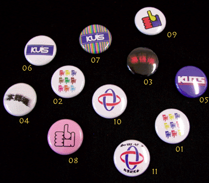

| 缶バッジ |
| ￥100 |
|  |
| 01.九椅子３色 |
この９つの椅子、ちっちゃくなって、更にかわいさ増しま した。
design:Hidemasa Yasuda(以下HY） |
| 02.九椅子カラフル | この可愛さが女の子に大人気！（HY） |
| 03.幕張魂 | 幕張から生まれ、幕張から発信。私たちの原点です（HY） |
| 04.本郷魂 | 一人暮らしの神田生が多く居住する本郷。驚いたことに大人気の一品でした。（HY） |
| 05.スタンダード |
男子生徒に人気でした
design: Sintaro Yarimizo（以下SY） |
| 06.プール | このマーク、どこかプールっぽいよね。で、名はプール（SY） |
| 07.プールカラフル | 浜風祭で人気No1の作品です。（SY） |
| 08.指ピンク | いつでもオーライ！元気な笑顔を絶やさず行こう！という願いをこめて、この指。（SY） |
| 09.指カラフル | おもちゃのような品となりました。（SY） |
| 10.神田ロゴ | 私たち神田生には愛着のあるこのマーク。 |
| 11.起業研 | 恐れ多き神田外語のロゴに、私たちの名前を入れてよかったんでしょうか。。 |